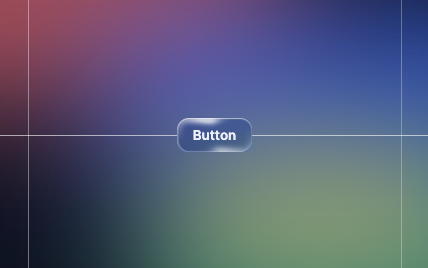
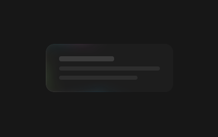

Deterministic resolve
A container is not a button and takes no swell at all: the gooey belongs to a round silhouette, and a card that yielded under the pointer would read as a toy. Its glass is the whole of its answer.
TIER 0 — MATERIAL
A fifth, opt-in layer above tokens, themes and components.css: five families, each carrying one meaning — glitch marks something re-resolved, liquid says you are recognised, aurora says attention lives here, glass says this is a physical surface, goo says these belong to one another. Every class here is additive; it composes onto a shipped .sl-* class and never replaces it. Ships as @sondalab/ui-kit 0.9.0.
Tier 0 is the default and is correct on its own: a resting glass hairline, a static aurora arc on focus, no motion. Tier 1 arms on mount() — the liquid’s deformation, finite glitch bursts, the aurora’s sweep — and refuses under prefers-reduced-motion: reduce and under high contrast, so the label above never lies about what is actually running. Tier 2 arms on mountGpu() where WebGPU answers, and turns the glass hairline into chrome: a reflection that slides along the edge, a halo that wanders around it, a bright spot under the cursor, and a ring that bends with the surface. The reference for all of it is libraries.dev; the conic hairline beneath the chrome is the fallback, not a lesser draft of it.
Something re-resolved. Two ghost channels off --slc-accent and --slfx-depth, blended with mix-blend-mode: screen. JS owns timing only — burst() runs one finite, randomised pulse (200–500ms, capped at 1500ms); a burst requested while another runs is dropped, not queued, because a queue reads as breakage rather than signal. The glitch never uses its host's ::before/::after — it lives on a required child <span class="sl-fx-glitch">, so a button can glitch, sheen and ring all at once without one effect winning by accident.
Click to re-resolve. The button itself is a glass pane with the aurora's rim; the glitch sits on its child, never on .sl-btn directly.
Five bands, each carrying --slfx-i (0…4) and --slfx-n (5) inline — the clip-path divides by them. A shard missing either variable has an invalid clip-path and silently does not render.
scramble() cycles random glyphs and locks the real characters left to right, terminal-readout style — a text change, not motion, so it is safe under reduced motion.
Cache miss
resolve("q-11c7") re-ran the tool — 340ms, not cached.
A danger callout is the one container that carries a glitch: it marks something that just re-resolved, fired once when the page mounts.
You are recognised. The silhouette gives under the pointer, the content never does: one shared <svg class="sl-fx-liquid__skin"> is parented into the element below its text — its own rounded box plus a drop at the cursor, welded by a goo filter (blur, then alpha contrast, as libraries.dev/gooey does it) and painted in the element's own computed fill and border colours, so hover and active states stay its own. A critically-underdamped spring drives the swell, a few pixels at most; the drop trails the pointer with its own lag, a released shape overshoots and settles, and the skin leaves once the spring is still — non-destructive. The gooey belongs to a round silhouette: only a round icon-only button takes the swell, through .sl-fx-liquid--drop — a modifier written in the markup, never inferred from a measured radius — and nothing else takes it — a container yielding under the pointer reads as a toy; a bare .sl-fx-liquid is inert, and a text button is glass instead (§04). Only one element deforms at a time, and under Tier 2 the chrome The radius is never rewritten: the skin traces whatever the component declared.
Move the pointer across either. The outline swells where the cursor is and the chrome follows it; the icon does not move, and is never filtered. --drop is the contract: on a text button the drop read as a blister on a box, so it is welded onto round buttons alone.
A container is not a button and takes no swell at all: the gooey belongs to a round silhouette, and a card that yielded under the pointer would read as a toy. Its glass is the whole of its answer.
Attention lives here. The border beam, in CSS at every tier: a 1px arc of light riding the border — the depth companion at its tails, the accent along it, a white-hot core — with a bloom that follows the arc’s own shape and a wash of the same light just inside the edge, its hue drifting a little while it sweeps. Four readings, separated by the fraction of the perimeter lit — never by colour, never by speed: static on focus, sweep for ambient liveness (one per document, granted by grantLive()), busy while real work runs, determinate when the arc length is the value. The aurora renders state; it never is the state — every busy element below also carries aria-busy or role="progressbar", which is what keeps reduced-motion and high-contrast visitors informed. Where the light is on, the chrome stands down: the edge belongs to attention.
Indeterminate — the tool has not returned yet.
A short arc orbits, ~1.1s. aria-busy="true" is the requirement, not the ring.
62% — 8 of 13 surfaces re-audited.
--slfx-progress pins the arc length; nothing rotates. The card's edge is its own progress bar.
A filled button has only a transparent border, which its fill paints under — so --rim steps the ring outside the box, hugging the fill, and swaps the beam to the depth companion: the accent is what the fill is made of. While busy the button keeps full opacity; it is working, not unavailable.
Holds the one ambient light, granted by grantLive() on mount. Granting it elsewhere revokes it here — the coordinator allows exactly one.
Curtains behind the pane, drifting on one clock and softening on another. They sit in the backdrop, so the glass bends them and parts them into their colours at the faces — the light is in the glass, not laid on it. --sweep asks for the rotating arc instead.
The count is the knob. Fewer curtains are wider, more are narrower, and the pane decides how wide one is.
--slfx-pillar-count is how many curtains hang across the host; seatGlow() divides the host's own width by it, so the pattern scales with the box instead of being a fixed 104px wherever it lands. That figure was fitted on a 320px card — three across the pane, which is still the default — and left absolute it made a 1104px row show nine ribs where the card it was measured on showed three. Every stop, both tiles and the sway are fractions of that one pitch, so the two combs still beat in the ratio they were measured at. Without JavaScript the 104px fallback holds and nothing changes.
A link's underline, a tab's active bar, an inversion band's rule: the aurora sweeps a segment instead of a perimeter, and never becomes a ring there.
This is a physical surface. Under Tier 2 the element’s own border becomes chrome: its border-radius and border-width are read into a signed distance field, and a hairline exactly that wide reflects a moving environment — bright and dark bands, the product’s hue as pastel flecks between them, never a tint over the whole ring — with one soft halo wandering around the edge and a bright spot under the cursor. The chrome’s two poles sit around the page’s own ground, on ink and on paper alike. Without a GPU the same border carries a static conic hairline; glass and aurora share one ::after, because a single pseudo-element is all CSS gives an edge, and while the aurora is lit it owns that edge. Every text button, primary or ghost, is a pane — made of glass, not merely edged with it: a slab of light on ::before under the label, a glint that follows the pointer, and a hairline that turns to face it fringed with the accent on one side and the depth companion on the other, which is what refraction looks like on an edge. The label is never refracted.
Move the pointer over either. A ghost button's 1px border is the glass edge — no second ring is added on top of it — and while the pointer is on the pane the hairline's hot stop faces it, a fringe of colour either side. A primary is the harder case: translucency over an opaque fill is light that sits on the fill — the glint along the top, the shade along the bottom, the 1px rim inside the edge, the spot under the pointer — while its ::after belongs to the rim aurora; under Tier 2 the chrome takes the fill's outer pixel.
A mask clips a backdrop-filter's output, so a pane masked to its own glyphs leaves glass in the shape of the text. glass-text.js measures the element — face, size, weight, tracking, and the real ascent off a canvas — and writes an SVG <text> mask in page pixels; nothing about the type is declared in the kit, so a surface restyles it in CSS alone. An unmasked copy is seated before the host to carry the light, because a glow inside the host would be masked away with it, and the module keeps the two strings in step so a scramble decodes in both at once. One line only: SVG text does not wrap.
The keycap edge is glass at rest, always — a keycap never takes focus, so it never has an attention state.
An <input>, <textarea> or <select> renders no ::before/::after of its own — the browser owns that box. Wrap it in .sl-field__control instead; the field entry in §06 Declension below carries the live example.
The band remaps all three border roles — --slc-border, --slc-border-strong, --slc-border-subtle — off currentColor. This card's own 1px border reads the first directly; the glass ring's --slfx-edge-* stops read the other two, resolved on the edge itself rather than at :root, so both survive the strongest neutral.
Hover the first two. .sl-figure__media sizes its contents and clips them (overflow: hidden), so a pane filling it has nowhere to swell into: at 1.03 its 1px rim and the glint along its top cross the wrapper's edge and are cut, and the pane loses its edge at exactly the moment it is being pointed at. compositions.css binds --slfx-pane-swell: 1 there. .sl-avatar clips as well and is deliberately left out: its contract admits an image or the monogram rather than a pane, and the composition it does have with glass is being a pane — a clickable avatar — whose swell nothing clips. The property is read with its default at the point of use in effects.css — never declared on the pane — which is what lets a value set on the wrapper reach the pane and the light seated before it together.
These are one substance. Where the liquid answers the pointer on one element, the goo answers the layout across several: a container carries .sl-fx-goo and owns one <svg class="sl-fx-goo__field">, every .sl-fx-goo__member contributes its rounded box to that field in the container's own coordinates, and a single goo filter runs over the group. Two silhouettes can only weld if they share a filter coordinate space — which is why this is a family of its own and not a looser gate on §02: the liquid's skin is parented into one host and is structurally incapable of merging with a neighbour. The meaning differs too. Not you are recognised but these belong to one another, so it marks a set, never a state. The content is never filtered: the field is a silhouette layer below the members and the real DOM rides crisp on top.
Each silhouette is painted in its own member's computed background, and the blend costs nothing: the goo chain blurs premultiplied RGBA and then steepens only the alpha, so where two members weld their colours run into one another across the neck by themselves. No GPU — the neck is a filter result, not a per-pixel lighting calculation, which is why this family has no Tier 2 and the glass keeps it.


An <img> has no fill of its own, so its silhouette is filled with the picture itself and the goo blurs it like any other paint — the edges run into the neck. The picture on top is untouched and unfiltered; only the substance behind it carries the blur.
Every member stands on --slfx-goo-fill — the field's declared substance, opaque — and its own fill is composited over that at the alpha the component chose. So a member with none at all (a bare wrapper, anything whose glass paints on a pseudo-element) is simply the substance, and a member with a tint stays a tint. The pair exists because the goo's slope erases everything below alpha 0.5: forcing a member's own colour opaque instead was tried, and a sl-tag — the accent at low alpha — stopped being a tint and became the accent, three quiet tags rendering as three saturated slabs.
Drag a chip with the pointer, or focus one and move it with the arrow keys (hold Shift for a bigger step). A move is the one change nothing reports — a ResizeObserver sees a box change size, never change place, and an inset write mutates no childList — so the field re-measures per frame while a pointer or the focus is inside it, and otherwise only if it drifts. Bring two within 26px and the substance necks between them, carrying both colours into the bridge; pull them apart and it snaps. The chips are divs with role="button" and a tab stop, not <button>s: a form control is refused a field outright, and a div paints nothing of its own, so the substance can be its whole surface. They are placed from --x/--y rather than moved with a transform, which would move the painted element without moving the box getBoundingClientRect() reports — the silhouette would stay behind.
Add .sl-fx-goo--drift to the container and its members wander slowly around where they were laid out. These three sit a hair inside their own 20px weld, so the necks thin, part and re-form without anyone touching them — the one thing this family does that a static page does not already imply. Each member gets its own period as well as its own phase, because a shared period with staggered delays walks the same ellipse in formation and reads as a carousel. The motion is on translate, not transform, so it composes with the scale a liquid host or a pane puts there under the pointer. A drifting field keeps re-deriving its silhouettes while it is on screen, and stops when it leaves; a visitor who asked for less movement gets the field laid out and welded, which is this family's Tier 0 and is correct on its own. The derogation §01 offers does not reach here: that one exists for a consumer whose glitch is brand, and a drift is decoration.
Two knobs and one refusal, for a reader who will not find them above. --slfx-goo-weld is the largest gap between two members, as laid out, that still grows a neck — edge to edge between facing sides, so a grid's diagonals stand further apart than its gap and stay open; geom.js spends it on dilation first and blur only up to --slfx-goo-soft, because dilation preserves an outline where blur melts it. And a button, input, select, textarea or a[href] is refused a field outright, marked or not: a control paints its own chrome through layers this family does not own, and its affordance is worth more than the merge.
Containers must give the substance room. The goo reaches --slfx-goo-reach plus three blur sigmas past the outermost member — about 34px at the default weld — so an ancestor with overflow other than visible, with contain, or with a clip-path cuts it along a straight line. The rule of §04, one scale up.
Every family, applied to the shipped .sl-* classes from @sondalab/ui-kit/components.css — never all four per component, and never one because it was available. The mapping is docs/specs/2026-09-08-effects-layer-design.md §Per-component declension; sl-audit checks colour, not this.
Primary: ● glass --pane over the fill, ● aurora --rim, — liquid. Ghost: ● glass --pane, its border the edge, ● aurora, — liquid. Round icon-only: ● liquid --drop, ● glass, ● aurora — the one button that goes gooey.
Focus it, or scroll §03 for the granted sweep — hover for the glass.
● glass always; ○ no liquid — a card is not a round button; ● aurora only on focus, busy or a granted sweep.
— never liquid: a field that deforms while typed into trades legibility for spectacle. ● glass + ● aurora bind to the .sl-field__control wrapper, since the <input> itself hosts no pseudo-element.
The active tab's 2px underline is a linear aurora; scramble runs on a label change, not shown here to keep the tab order stable.
— never aurora or liquid, a status pill states a fact instantly. ○ glass is a micro-rim only; scramble runs on value change (§01).
Shatters in once on open — fired here on mount. Per the table its rim stays lit for as long as the dialog is open; this page keeps its one ambient grantLive() grant on the card in §03, so this dialog shows its resting and busy states only, not the sweep.
| Probe | Result | Latency |
|---|---|---|
| q-8f2a | cached | 0ms |
| q-11c7 | miss | 340ms |
Row-level ○ liquid only — the table shell itself takes no family.
Link: the underline becomes a linear aurora on hover. Kbd: ● glass at rest, always.
Cache miss
resolve("q-4d90") re-ran the tool once, on mount.
● glass edge, plus one glitch burst on mount — the wired example is §01.
Section eyebrow
Scrambles once as it enters the viewport — every .sec-idx on this page (01…06) does exactly this; scroll away and back to watch one re-run.
On ink
data-sl-fx="off" — subtree opt-out
Inert inside this region — no pane, no ring, no glitch, regardless of the classes present.
A dense data region inside an expressive page — a table of probe results, say — declines the whole layer at the subtree boundary without touching a single component class.